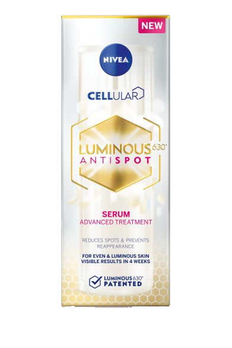
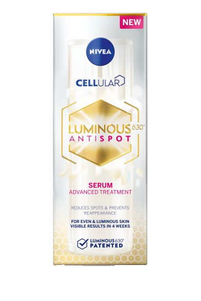

Cellular LUMINOUS630 Anti Dark Spot has proven efficacy in targeting the root cause of the three major types of dark spots - sun exposure, ageing and hormonal changes such as during pregnancy or menopause. All three can trigger a melanin imbalance, leading to the same result: the appearance of dark spots on the face.
 

Dark spots on the face are the result of an unbalanced melanin production. Melanin is a natural pigment present in our skin, and is responsible for every person’s natural skin color. However, various factors can over-excite the production of melanin, which accumulate within the skin and become visible on the face as dark spots and uneven skin tone.